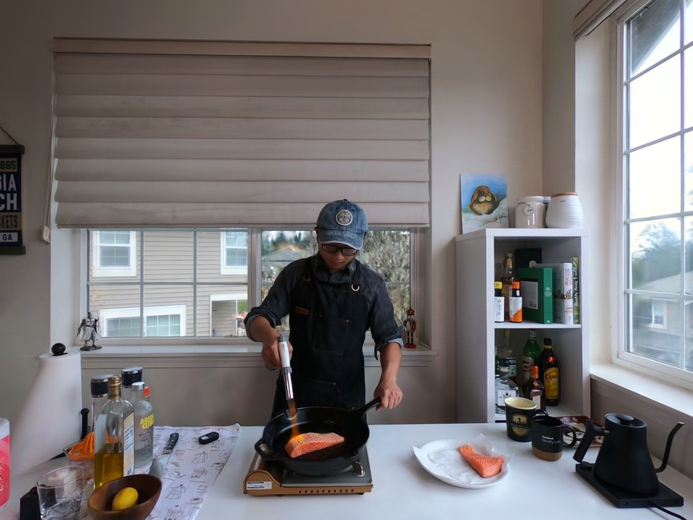

Rasterize time. Navigate space.
Real-time 4D volumetric video, streamed as a single video file and rendered live in your browser.

Drag to orbit · Scroll to zoom · WASD to move · Right-drag to pan
Key metrics at a glance
| Metric | Measurement | Context |
|---|---|---|
| Bit rate | 20 Mbit/s | About what a standard 4K film stream needs |
| Frame rate | 120+ fps, VR capable | Drawn live at your display's rate, fast enough for a headset |
| Visual fidelity | 31.3 dB PSNR | Against the original camera footage (higher is better) |
| Perceptual error | 0.148 LPIPS | VGG, against the original camera footage (lower is better) |
Measured on the standard benchmark: the full 300-frame clip of the scene, at the benchmark's resolution, against camera 0, which the benchmark holds out (it is never trained on), from the stream as it is delivered. The clip in the player is the same method trained on all 19 cameras, camera 0 included: what a delivered stream uses, so what only camera 0 sees, such as the far side of the windows, is in the scene too.
State of the art: 4D Gaussian splatting
The numbers behind the graph
How it works
1. The scene
“Flame salmon” from the Neural 3D Video dataset (Li et al., CVPR 2022; CC BY-NC 4.0): a kitchen filmed by synchronised cameras, with fast, complex motion. The clip is the benchmark's 300 frames, ten seconds.
2. The stream
Every frame is a complete 3D scene of Gaussian splats, stored as the frames of an ordinary HEVC video file. The tours were never filmed: each is a camera sent through the scene after the fact, and each frame is drawn as you watch. The tour and the video are separate, so pause the video and the camera travels on; drag the picture and the camera is yours.
3. The player
Your browser's hardware video decoder unpacks the stream and your graphics card draws the scene, with WebGPU or WebGL 2. The picture's size and frame rate follow the load, so it stays smooth on a laptop and on a phone.
System requirements
A browser with WebGPU or WebGL 2 and hardware HEVC decoding. Tried on Chrome and Edge (Windows, macOS) and Safari on iPhone; where the live scene cannot start, the page shows a still and says why.